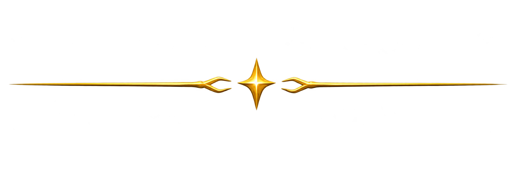
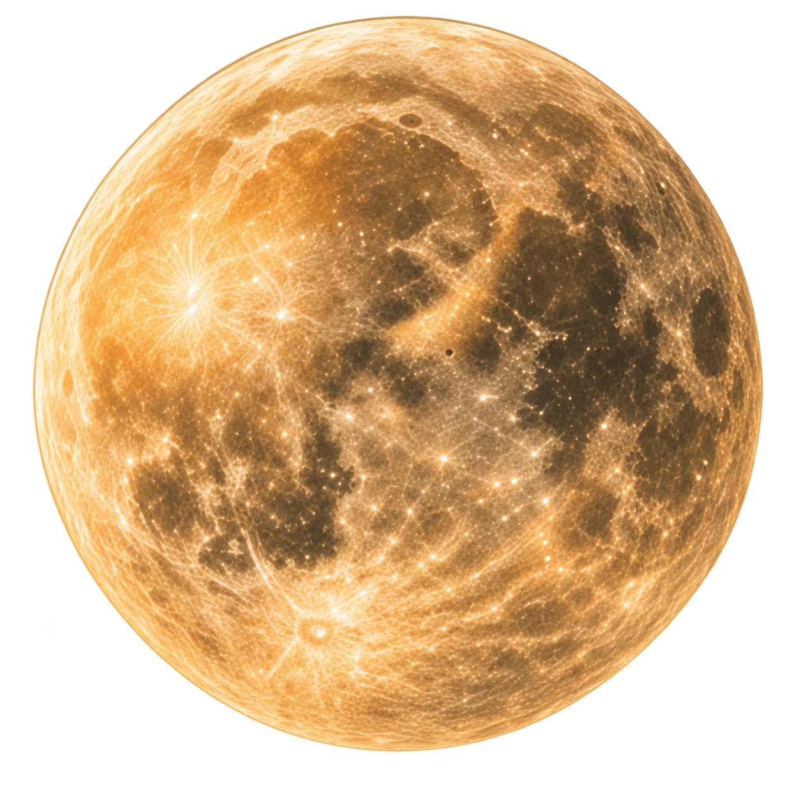
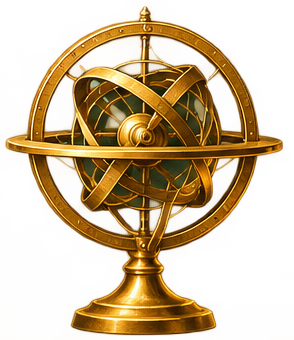

Fuso horário
Os eventos lunares são apresentados no horário da região selecionada.
PLANNER · CALENDÁRIO · CICLOS · DIÁRIO
Acompanhe a Lua, compreenda seus ciclos
e caminhe em sintonia com o tempo natural.



Datas civis verificadas pelo calendário gregoriano. Fases principais: Observatório Naval dos EUA (USNO), horários convertidos do UTC para o fuso escolhido. Ingressos nos signos: prévia técnica de 2027; horários sujeitos a auditoria.
Calendário completo das quatro fases principais da Lua, com datas e horários ajustados ao seu fuso horário.
Fonte das fases principais: U.S. Naval Observatory (USNO), tabela de 2027 em UTC. Os horários apresentados são convertidos para o fuso escolhido. Os símbolos são representações gráficas, não fotografias da Lua.
Acompanhe quando a Lua entra em cada signo do zodíaco tropical, com horários no fuso escolhido.
Prévia técnica: os horários dos ingressos são cálculos preliminares de longitude lunar geocêntrica, no zodíaco tropical, ainda sujeitos a auditoria astronômica independente. A data pode mudar conforme o fuso horário.
Um espaço para registrar percepções, intenções e reflexões ao longo do ano.
As notas são armazenadas neste navegador.
Os registros ficam armazenados localmente neste navegador e dispositivo, não em uma conta online. Faça backups periódicos para evitar perdas. Ao restaurar, notas existentes nas mesmas datas poderão ser substituídas após confirmação.
Organize suas intenções, prioridades e tarefas mês a mês, acompanhando seus próprios ciclos.
Seus dados são salvos neste navegador.
Os dados são locais e não sincronizam entre dispositivos. Exporte backups regularmente. A organização por mês é pessoal e não constitui previsão astrológica.
Preferências, proteção dos registros e impressão do seu planner.
Os registros ficam neste navegador. Exporte um backup JSON regularmente para protegê-los.
Instalar como aplicativo (recomendado): a primeira instalação requer internet e um endereço seguro (HTTPS). Após a instalação e o carregamento dos recursos, o uso offline poderá ser disponibilizado. A instalação ainda será habilitada e testada.
Usar no navegador, sem instalar: você poderá acessar o conteúdo online sem instalação, mas não deve contar com acesso offline ou preservação garantida das anotações nessa modalidade.
Seus registros: são armazenados no dispositivo, sem sincronização automática. Exporte e guarde backups JSON regularmente. Limpar dados do navegador ou desinstalar o aplicativo pode apagar os registros locais.
Você poderá escolher a modalidade que preferir quando a versão instalável estiver disponível.
Verificando se este navegador oferece instalação.
Os eventos lunares são apresentados no horário da região selecionada.
Exporte um único arquivo JSON com suas notas do Diário e seus planejamentos mensais.
Ao restaurar, registros existentes nas mesmas datas e meses poderão ser substituídos após confirmação.
Abra a página que deseja imprimir e use a impressão do navegador. Na janela de impressão, escolha Salvar como PDF para gerar um arquivo.
As anotações e planejamentos são armazenados neste navegador e neste dispositivo. Não há sincronização automática com outros aparelhos.
Importante: excluir dados do navegador, utilizar modo anônimo ou trocar de dispositivo pode tornar seus registros inacessíveis. Guarde cópias do backup em local seguro.